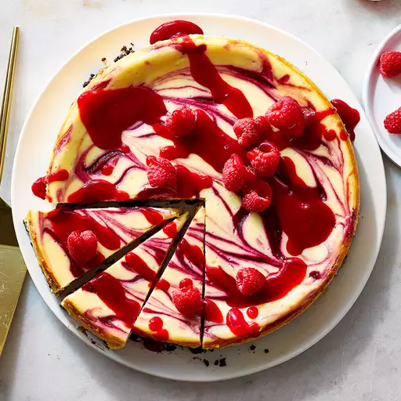

RASPBERRY CHEESECAKE

This white chocolate raspberry cheesecake is excellent and similar to one
you would get in a restaurant. Great for special occasions. Garnish with
white chocolate curls if desired.
Ingredient
- 1 cup chocolate cookie crumbs
- ¼ cup butter, melted
- 3 tablespoons white sugar
- 1 (10 ounce) package frozen raspberries
- ½ cup water
- 2 tablespoons white sugar
- 2 teaspoons cornstarch
- 2 cups white chocolate chips
- ½ cup half-and-half cream
- 3 (8 ounce) packages cream cheese, softened
- ½ cup white sugar
- 3 large eggs
- 1 teaspoon vanilla extract
Steps
- Gather the ingredients.
-
Make crust: Mix together cookie crumbs, melted butter, and sugar in a
medium bowl. Press mixture into the bottom of a 9-inch springform pan.
-
Make sauce: Combine raspberries, water, sugar, and cornstarch in a
saucepan. Bring to a boil and continue boiling until sauce is thick,
about 5 minutes. Strain through a mesh strainer to remove seeds. Preheat
the oven to 325 degrees F (165 degrees C).
-
Make cheesecake: Melt white chocolate chips with half-and-half in a
metal bowl over a pan of simmering water; stir occasionally until
smooth.
-
Mix together cream cheese and sugar in a large bowl until smooth. Beat
in eggs one at a time. Blend in vanilla and melted white chocolate
mixture. Pour 1/2 of the batter over crust.
-
Spoon 3 tablespoons raspberry sauce over batter. Pour remaining
cheesecake batter on top. Spoon 3 tablespoons raspberry sauce over
batter. Swirl batter with the tip of a knife to create a marbled effect.
-
Bake in the preheated oven until filling is set, 55 to 60 minutes. Cool
cheesecake at room temperature, then cover with plastic wrap and
refrigerate until thoroughly chilled, 8 hours to overnight.
-
Remove cheesecake from the pan and serve with remaining raspberry sauce.
Back